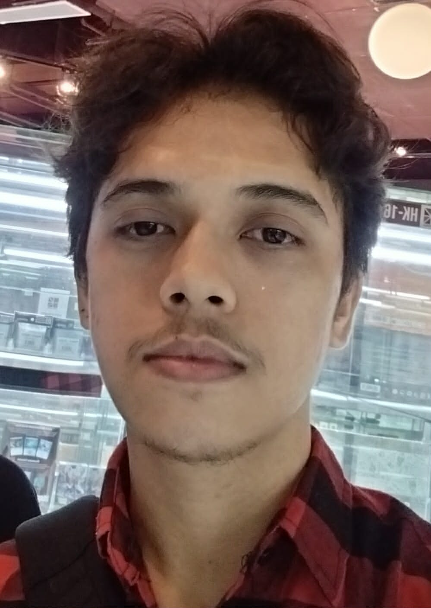
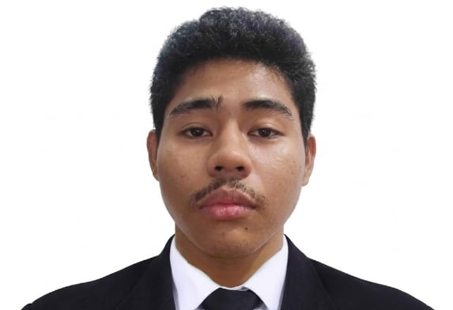

Seeing Santa Rosa Through New Eyes.
This blogsite was developed by six (6) students of the BSIT 3-2 program at the Polytechnic University of the Philippines, Santa Rosa Campus, as a requirement for Art Appreciation, Academic Year 2026–2027. It presents ten (10) original photographs, taken and owned by the developers themselves, captured around Nuvali and the old museum near the Santa Rosa Plaza. Each photograph is evaluated through Description, Analysis, and Interpretation, then classified under one of the four Aesthetic Theories: Imitationalism, Formalism, Emotionalism, and Utilitarianism.
About the Team
Group 3, BSIT 3-2
A collaborative study by Group 3, combining analytical observation with digital presentation to explore visual art across our city’s public and historical spaces.
Albert Lawrence B. Robiñol
Lead Developer
Luke Edward G. Schofield
Associate DeveloperSteven James P. Leosala
Field Photography
Dwayne Lawrence SF. San Juan
Art Critique & AnalysisAvryl Rohmer T. Marapoc
Quality Assurance (QA)Nikko J. Agcaoili
Documentation